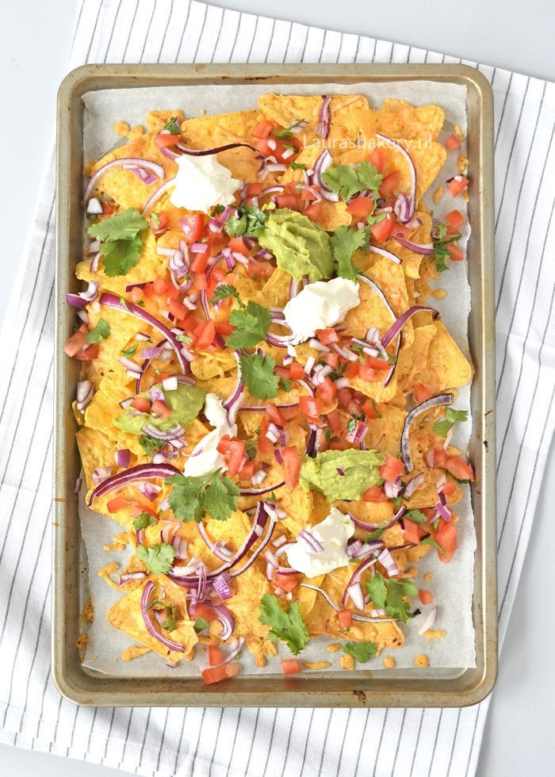

Nachos

Description
Een nacho schaal is een Mexicaans gerecht wat kan worden beschouwd als comfort food. Er zitten namelijk erg veel koolhydraten in de chips en veel vetten in de kaas. Het is perfect op een brakke zondag na Perron.
Ingredients
- tortilla chips
- veel kaas
- mexicaanse kruiden
- guacamole
- sour cream
- salsa
- vega kipstukjes
- limoen
Steps
- Bak de vega kip met de mexicaanse kruiden
- Plet de avocado en meng deze met peper zout en limoen
- Leg een laag met nachos in de schaal en leg 1/3e van de kip en 1/3e van de kaas erop
- Doe dit nog 2 keer
- Zet het in de oven voor 25 minuten
- Serveer de guacamole, sour cream en salsa op de chips